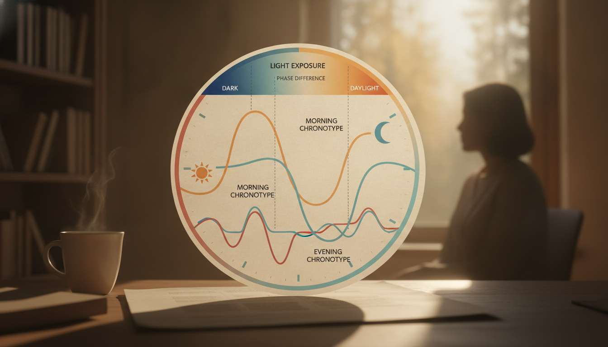

The Unseen Force Behind Your Late Nights
Ever felt like you're fighting your own body just to get out of bed in the morning? Or find yourself wide awake at 2 AM, staring at the ceiling, even when you desperately want to sleep?
That pull isn't a choice you made. It's a biological command, a blueprint in your DNA, about 50% inherited (Burgess & Eastman, SLEEP, 2017). Your natural preference for when you sleep and wake—what we call your chronotype—is set by your internal clock. Think of it as a complex orchestra of 'clock genes' deep inside you (Wright et al., SLEEP, 2017).
This means the constant pressure to meet early alarms or late-night demands often feels like a battle against yourself. You're perpetually groggy in the morning or wired long after everyone else is asleep. Your body has its own schedule. When the world imposes a different one, the conflict begins.
True Night Owl or Just a Mismatched Schedule?
A true night owl isn't just someone who enjoys staying up late. Their biology is built for it.
Their internal circadian clock naturally runs later, pushing their melatonin rhythm—the hormone that tells your body it's time to sleep—well past midnight. Their core body temperature, which usually dips lowest in the early morning, also shifts later. This keeps them alert when others are winding down (Roenneberg et al., 2019).
But many who call themselves night owls, especially shift workers, are actually living with 'social jet lag.' This chronic misalignment happens when their internal clock clashes with outside demands. They stay up late for work or social reasons, then try to catch up on sleep on days off. This messes with their natural sleep drive and locks in a late pattern (CDC NIOSH, 2019).
Even simple habits like late-night screen exposure can fool your body into staying awake, creating a pattern that looks like a genuine night owl chronotype, but isn't.
This variation in chronotype even traces back to an ancient survival strategy. Some individuals naturally stayed awake and vigilant during different phases of the night, acting as a kind of 'sentinel' system for the group (Samson et al., 2017).
The Cost of Chronic Misalignment: Social Jet Lag and Beyond
Ancestral societies might have benefited from varied sleep schedules, ensuring someone was always awake. But modern life often punishes those who deviate.
The relentless struggle against your internal clock, especially for evening types forced into early starts, takes a heavy toll on your body.
This internal conflict shows up as 'social jet lag'—the jarring difference between your weekday and weekend sleep patterns. It's more than just feeling tired. Each hour of social jet lag increases your risk of heart disease by 11% (Parsons et al., SLEEP, 2017). Your autonomic nervous system, always trying to find balance, struggles. This leads to inappropriately high cortisol levels.
The consequences hit your daily life hard. Evening chronotypes face significantly higher risks of poor work ability. They have more than double the odds of productivity loss compared to morning types (Wróblewska et al., J Occup Health, 2021).
This isn't just about how well you perform. It's about fundamental rest. Evening types often report poorer sleep quality, with nearly twice as many experiencing poor sleep compared to morning types (23.2% vs. 12.4%) (Fabbri et al., Sleep Med Rev, 2021).
When outside demands force you to sleep and wake against your natural rhythm, your body's intricate systems—from regulating your temperature to releasing melatonin—are fighting an uphill battle. The result? Chronically fragmented, unrefreshing rest.

Shifting Your Internal Clock: What's Possible?
Can you truly change your internal clock?
Your fundamental chronotype—that deep biological preference for when you sleep and wake—is largely genetic. Its timing is as built-in as other traits.
However, how it *expresses* isn't entirely set in stone. You can make gradual adjustments through consistent, intentional practices: precise light exposure, strategically timed meals, and a stable sleep schedule. This process of circadian phase regulation allows for subtle nudges, not radical overhauls. Trying to make drastic changes often leads to chronic misalignment and a body that's always struggling.
The sustainable way forward isn't to fight your core biology. It's to understand its boundaries and adapt your lifestyle. Find the balance where your daily routine respects your intrinsic rhythm, cutting down on the internal conflict that fragments your rest.
Reclaiming Your Rhythm: A Protocol for Alignment
Reclaiming your rhythm starts with a deliberate, flexible plan. Not every schedule allows for perfect alignment, but everyone benefits from being intentional.
- Identify Your Unpressured Window: For 3-5 consecutive days, remove all alarms and external obligations. Just observe when you naturally fall asleep and wake up. This period shows you your body's true sleep-wake timing—your actual chronotype—free from societal or work demands.
- Master Light Exposure: Get bright light, ideally natural sunlight, at your desired wake time. This tells your circadian phase to begin (Burgess & Eastman, SLEEP, 2017). On the flip side, dim ambient lights 60-90 minutes before your desired bedtime. This lets melatonin release naturally (Wright et al., SLEEP, 2017).
- Anchor Your Wake Time: Stick to a consistent wake time within a 30-minute window, even on days off, whenever your schedule allows. This regularity strengthens your circadian rhythm, helping it bounce back from occasional disruptions (Wróblewska et al., J Occup Health, 2021).
- Shift Worker Adaptation: If your work schedule rotates, treat each block of shifts (e.g., 3-5 night shifts) as a distinct "mini-chronotype." Apply the light/dark rules aggressively around each block: use blackout curtains to create night during daytime sleep and blue-light blocking glasses as needed before sleep.
Sources
- Burgess, H. J., & Eastman, C. I. (2017). The Circadian System and Sleep. SLEEP, 40(6), zsx049.
- Wright, K. P., Jr., McHill, A. W., Birks, B. R., Griffin, B. R., Rusterholz, T., & Chinoy, E. D. (2017). Entrainment of the Human Circadian Clock to the 24-h Day. SLEEP, 40(6), zsx048.
- Roenneberg, T., Pilz, L. K., Zerbini, G., & Targa, R. J. (2019). Social Jetlag: An Indicator of Chronotype and Circadian Misalignment. Current Biology, 29(23), R1250-R1251.
- CDC NIOSH. (2019). Shift Work and Long Work Hours: A NIOSH Science Blog.
- Samson, D. R., Crittenden, A. N., Mabulla, A. Z. P., Mabulla, I. A., & Nunn, C. L. (2017). Chronotype variation in Hadza hunter-gatherers. Royal Society Open Science, 4(5), 170334.
- Parsons, M. J., et al. (2017). Social Jetlag and the Risk of Cardiovascular Disease. SLEEP, 40(Abstract Supplement), A127-A128.
- Wróblewska, A., et al. (2021). Chronotype and Work Ability: A Systematic Review. Journal of Occupational Health, 63(1), e12267.
- Fabbri, M., et al. (2021). Chronotype and Sleep Quality: A Systematic Review and Meta-Analysis. Sleep Medicine Reviews, 59, 101490.
- Roenneberg, T., & Merrow, M. (2022). The Human Circadian Clock: A Review of Its Entrainment and Disruption. Frontiers in Neuroscience, 16, 890983.
This is not medical advice. Talk to your provider.
The real work, then, is not in changing who you fundamentally are, but in understanding it and building a life that respects that truth.